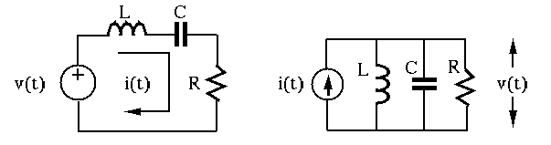

- The RCL series circuit (left) with an input and output
is described by the following equation:
 |
(161) |
Taking derivative and dividing by  on both sides we get a 2nd-order
linear constant coefficient differential equation (LCCDE):
Alternatively, as
, we have
the equation above can be written as a 2nd order ODE in terms of
on both sides we get a 2nd-order
linear constant coefficient differential equation (LCCDE):
Alternatively, as
, we have
the equation above can be written as a 2nd order ODE in terms of  :
:
- The RCL parallel circuit (right) with input and output
is described by the following equation:
Taking derivative and dividing by
 on both sides we get a 2nd-order
LCCDE:
on both sides we get a 2nd-order
LCCDE:
- Other RCL circuits (not pure series or parallel):

The dimensionality of the coefficient of the first order term is
frequency:
The dimensionality of the coefficient of the constant terms is
frequency squared:
In general, any 2nd-order LCCDE with input  and output
and output  can be written in the canonical form
can be written in the canonical form
in terms of the two parameters:
- damping coefficient
 (unitless)
(unitless)
- natural frequency
 (frequency)
(frequency)
Comparing the canonical form with two equations above we see that
for both RLC series and parallel circuits:
and
- for RLC series circuit
- for RLC parallel circuit
We also have:
Note the following dimensionalities:
![$\displaystyle \left[ \sqrt{LC} \right]=\sqrt{[Henry]\;[Farad]}
=\sqrt{\frac{[Volt]\;[second]}{[Ampere]}\frac{[Ampere]\;[second]}{[Volt]}}
=[second]$](img496.svg) |
(177) |
We therefore see that and are unitless, and the
dimension of
is
as frequency.
Subsections